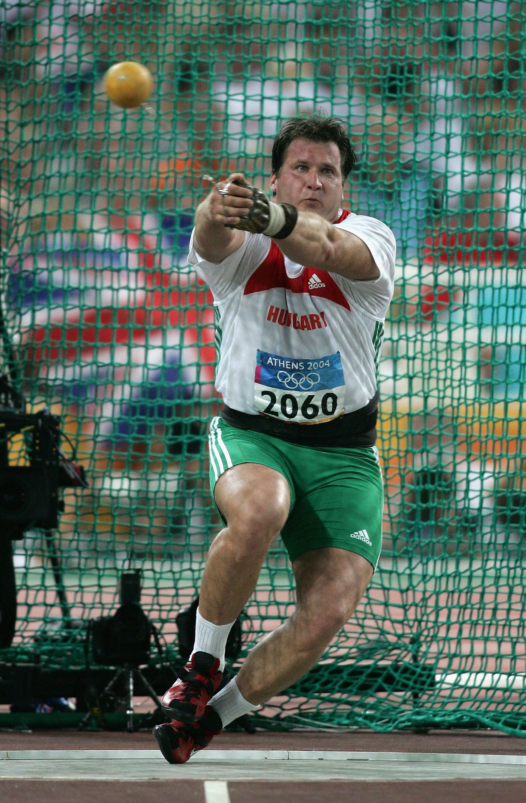
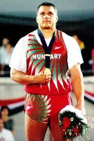
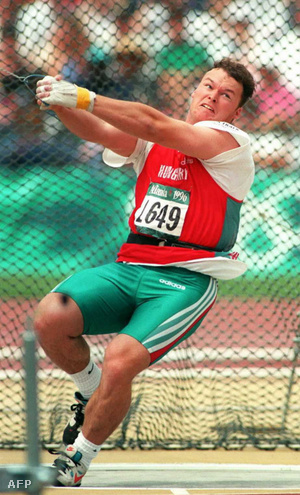

Ennek az oldalnak az a célja, hogy bemutassuk a legjobb férfi kalapácsvetőket. Ranglista, versenyek, statisztika és rekordok alapján.
Annus Adrián
Eredmények2001-ben 3. volt a világranglistán.2002-ben Világkupa győztes.2003-ban 2. helyezést ért el.
Gécsek Tibor
Eredmények1998-ban Európa-bajnok lett.1986-95 között kilencszeres magyar bajnok lett.1990-95 között hatszoros téli bajnok lett.
Kiss Balázs
Eredmények 1996-ban olimpiai 1. helyezést ért el. 1998-ban Európai-bajnokságon 2. helyezést ért el. 1991-ben az Ifjúsági Európai-bajnokságon 3. helyezést ért el.
